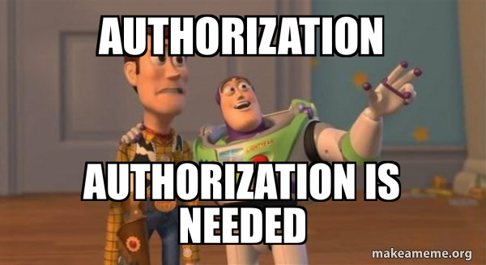
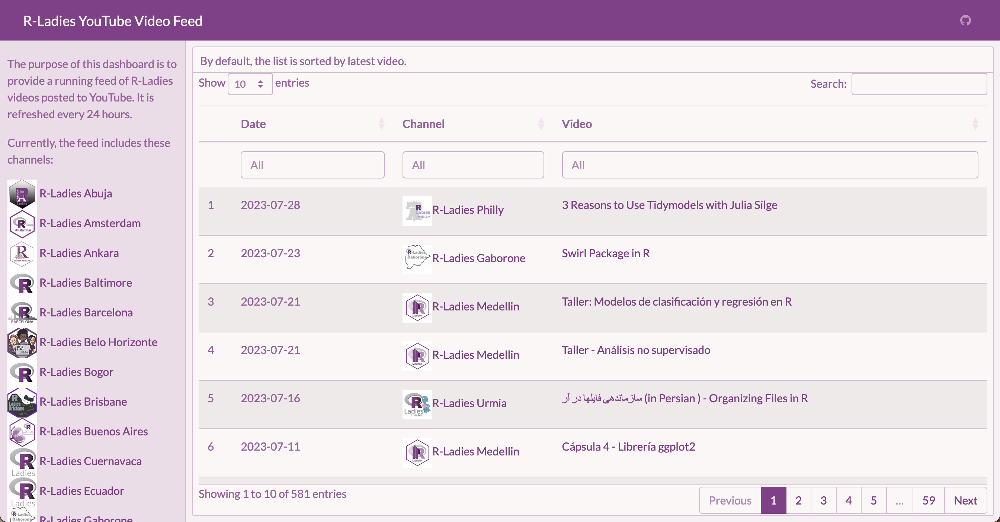
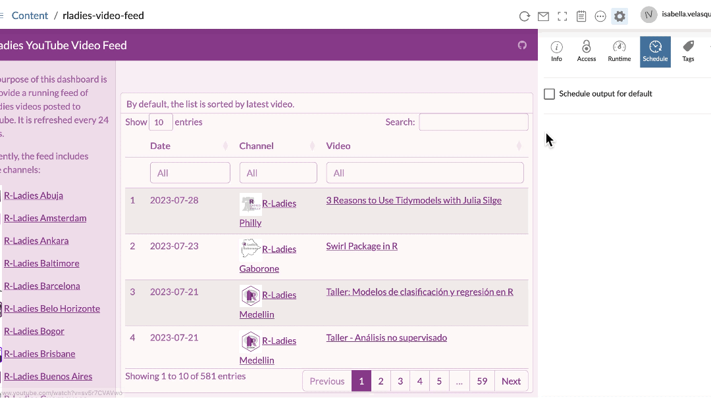

Using flexdashboard to create a GitHub Actions-powered YouTube feed

R-Ladies organizes a multitude of inspiring and exciting Meetups worldwide. However, due to work, time zones, or other commitments, I can’t attend them all. Fortunately, since the pandemic began, many Meetup hosts have started to record webinars and post them online. This provides a great opportunity to catch up on things I’ve missed afterward.
In addition to the Meetups, R-Ladies also maintains a variety of YouTube channels. The primary channel, R-Ladies Global, offers the largest collection of videos. Local chapters often have their individual accounts as well. To simplify the process of accessing videos from multiple chapters, I wanted a convenient tool for viewing an aggregated list of videos. I also thought it would be helpful to have the ability to search videos based on presenters, topics, and other criteria.
So, I set out to build a dashboard with {flexdashboard} that would display all this information. {flexdashboard} is built on R Markdown, which allowed me to use R to personalize a dashboard with custom colors and styles. And, of course, I used R to pull in the data. {tuber} provides access to the YouTube Data API v3 with R, a straightforward tool for getting the data I needed.
There were challenges along the way. Since Meetups happen fairly often, I hoped to use GitHub Actions to automatically refresh the dashboard every 24 hours. Unfortunately, I encountered difficulties due to the authentication options provided by {tuber}, which supports YouTube’s OAuth 2.0 authorization process. I reached out to my brother for help since we’d previously collaborated on an API wrapper in R. The project stalled as we tried unsuccessfully to get YouTube’s OAuth 2.0 flow to work with GitHub Actions.
We had a breakthrough when we realized that videos could be accessed relatively painlessly by skipping OAuth 2.0 and using an API key instead. After two pull requests to add API key authentication to {tuber}, we are delighted to announce that the GitHub version of {tuber} now contains functions that work well with GitHub Actions. You can find the finished (and automated!) dashboard here:
https://ivelasq.github.io/rladies-video-feed
The code for the dashboard is on GitHub in case you want to reuse it for another set of channels!
I originally used the tidyRSS package to pull the list of videos from YouTube. However, the YouTube RSS feed limits results to the latest 15 videos. The code is still available in the repo if you would like to take a look. This is a good option if you only want the most recent stream of content and would like to avoid setting up any Google credentials. Thanks to the R4DS channel and Tom Mock for pointing me in the right direction!
The rest of the post describes how we built the dashboard. We learned quite a bit in the process!

Get a YouTube API key
As is often the case with anything to do with Google, first, you must get credentials. In this example, we were interested in an API key that would work with the YouTube Data API v3.

- Log into the Google Cloud Platform Console.
- Create a new project.
- From your dashboard, click to ‘Go to APIs Overview’ and navigate to ‘Credentials’ in the sidebar.
- At the top, click ‘Create Credentials’ and choose ‘API key’.
- Your API key will pop up. Save it for reference later in this walkthrough.
- In the pop-up window (or in the hamburger menu for the API key), click ‘Edit API key’.
- Scroll to the bottom and under ‘API restrictions’, select ‘Restrict key’, select ‘YouTube Data API v3’ from the dropdown menu, click ‘OK’ to exit the dropdown menu, then click ‘Save’. This will restrict your API key so that it can only be used with the YouTube Data API v3, which will limit its usefulness if anyone gets ahold of your key.
Store your YouTube API key
Now that you have an API key, you will want to save it in your R environment (.Renviron) using usethis::edit_r_environ() if working interactively or in your repository secrets if using GitHub Actions. Storing the API key as an environment variable allows you to access it easily without the need to manually input it every time you run your code. GitHub Actions can interact with the API without manual intervention, and storing it as a repository secret keeps the key separate from your source code so it is not exposed to others.
To do this, follow the instructions below:
- Install the CRAN version of {httr2} and the GitHub version of {tuber}. {pak} allows for easy installation of packages, whether they are on CRAN, GitHub, pull requests, etc.
# install.packages("pak") # Install {pak} if not yet installed
pak::pak(httr2, soodoku/tuber) # CRAN and GitHub syntax side by side!- On your local machine, save your YouTube API key in
.Renviron. Running the code below will prompt you to save the API key. Paste your API key into the pop-up window:
tuber::yt_set_key()Now your YouTube API key is saved as YOUTUBE_KEY in .Renviron!
Using an API key is considered relatively insecure since the key itself will be included in queries sent over the Internet and thus could be intercepted. If you are considering including an API key in a package or in public source code, we recommend using the secret management functions provided by {httr2}.
If you would like to encrypt your API key, you can do so using {httr2} and a few arguments we built into {tuber}. You can first create a {tuber} package key stored as TUBER_KEY with tuber::yt_set_key(httr2::secret_make_key(), type = "package") and an encrypted YOUTUBE_KEY with tuber::yt_set_key(httr2::secret_encrypt("YOUR_UNENCRYPTED_API_KEY", key = "TUBER_KEY")). To retrieve a decrypted YOUTUBE_KEY in your code, you can then run tuber::yt_get_key(decrypt = TRUE).
Please note that encrypting your API key will keep it safe if others don’t have your TUBER_KEY to decrypt it, but it will still need to be included unencrypted in queries to interact with the YouTube Data API.
Pull and clean data
Woohoo, you are credentialed! It’s time for the fun part — pulling and cleaning data. I did this in a script called data_processing.R.
In addition to {tuber}, here are other packages that will aid you in the cleaning process:
library(tuber) # GitHub version, installed with pak::pak(soodoku/tuber)
library(readr)
library(dplyr)
library(stringr)
library(DT)Create a spreadsheet with the channels you are interested in. I created this manually — I just searched on YouTube for all the R-Ladies channels I could find. To make this workflow as programmatic as possible, I only included the chapter name, thumbnail, and channel ID.
dat <-
read_csv("https://github.com/ivelasq/rladies-video-feed/blob/main/r-ladies_channels.csv")
head(dat) chapter image id
<chr> <chr> <chr>
1 R-Ladies Global https://yt3.ggpht.com/ytc/AKedOLRM4FPiPcPBdFUmYWR… UCDg…
2 R-Ladies Baltimore https://yt3.ggpht.com/RQifC3qp_7AFeTc48-QV1i4WBNM… UC9U…
3 R-Ladies Philly https://yt3.ggpht.com/ytc/AKedOLShIKBvPUKqbvm_Cpu… UCPq…
4 R-Ladies STL https://yt3.ggpht.com/ytc/AKedOLSBA7rlz1yvbIJ7TVN… UCQ7…
5 R-Ladies Sydney https://yt3.ggpht.com/ytc/AKedOLQnaU-dJbb14j2RE6W… UCkr…
6 R-Ladies Vancouver https://yt3.ggpht.com/3yf0Zo8-VKffrG-dRT_Gs85xX_x… UCX5…Some YouTube channels have ‘custom IDs’ like RLadiesGlobal. These won’t work in {tuber}; you need the original IDs. The best way I found to get this ID is to click on a video from a channel. Then, scroll down to the description and click the channel name from that video. The original ID will appear in the URL after /channel/. A good idea for a future Shiny app would be a way to pull this information from the YouTube API…
Now, create a few more columns with dplyr::mutate() that expand the URLs into HTML format:
dat_urls <-
dat %>%
dplyr::mutate(
feed = paste0("https://www.youtube.com/feeds/videos.xml?channel_id=", id),
feed_url = paste0("yt:channel:", id),
channel_image_url = paste0(
"<img src='",
image,
"' alt='Hex Sticker for Chapter' width='40'></img>",
" <a href='https://www.youtube.com/channel/",
id,
"' target='_blank'>",
chapter,
"</a><br>"
),
)The {tuber} documentation describes the many functions available to you. Many of these require OAuth 2.0 authentication. Since I had only the channel IDs, I wanted to use list_channel_videos() to get a complete list of videos from the channels, which thankfully works with an API key!
For example, for the R-Ladies Global channel, you could run list_channel_videos() to get its (currently 165) videos:
tuber::list_channel_videos("UCDgj5-mFohWZ5irWSFMFcng", max_results = 200, auth = "key")What if you want the results for all the channels we have in our spreadsheet? I used a loop for this.
1dat_videos <- NULL
2for (i in 1:nrow(dat_urls)) {
tmp <-
3 dat_urls[i, ]["id"] %>%
4 dplyr::pull() %>%
5 tuber::list_channel_videos(
.,
part = "snippet",
config = list('maxResults' = 200),
auth = "key"
)
6 dat_videos <- dplyr::bind_rows(dat_videos, tmp)
}- 1
-
Starting with an empty data frame called
dat_videos, - 2
-
For each row in
dat_urls(which contains the channel IDs), - 3
- Find the channel ID,
- 4
- Pull the expanded URL,
- 5
-
Run it through
list_channel_videos(), and - 6
-
Add the information as rows to
dat_videos.
The arguments in list_channel_videos() gave me all the columns I am interested in with part = "snippet". Notice that there’s a default limit for the number of videos pulled from the API. I bumped that up a bit with the maxResults argument.
Then, I brought back the URL info:
dat_join <-
dat_videos %>%
dplyr::left_join(., dat_urls, by = join_by("snippet.channelId" == "id"))This results in a lot of information for each video. I cleaned it up a bit so that the data frame contained only the relevant columns in HTML format.
dat_dashboard <-
dat_join %>%
dplyr::mutate(
video_url = paste0(
"<a href='https://www.youtube.com/watch?v=",
snippet.resourceId.videoId,
"' target='_blank'>",
snippet.title,
"</a>"
),
channel_url = paste0(
"<img src='",
image,
"' alt='Hex Sticker for Chapter' width='40'></img>",
"<a href='https://www.youtube.com/channel/",
snippet.channelId,
"' target='_blank'>",
chapter,
"</a>"
),
date = as.Date(str_sub(snippet.publishedAt, 1, 10))
) %>%
dplyr::arrange(desc(snippet.publishedAt)) %>%
dplyr::select(date, chapter, channel_url, video_url, channel_image_url)See the final data processing file on GitHub.
Create a flexdashboard
You have the YouTube data — time to create a pretty dashboard!
My flexdashboard started as R Markdown files often do: with a YAML header. I specified an orientation (columns) and added the link to the GitHub repository in the navigation bar.
---
title: "R-Ladies YouTube Video Feed"
output:
flexdashboard::flex_dashboard:
orientation: columns
navbar:
- { icon: "fa-github", href: "https://github.com/ivelasq/rladies-video-feed", align: right }
---Add customization
If you’d like your dashboard to have a custom look, the {bslib} package is a great option. It can add different colors and fonts directly in the YAML header. Make sure to add library(bslib) in the actual code part of your .Rmd file. I used the R-Ladies style guide to fill out the rest of the YAML header:
---
title: "R-Ladies YouTube Video Feed"
output:
flexdashboard::flex_dashboard:
orientation: columns
navbar:
- { icon: "fa-github", href: "https://github.com/ivelasq/rladies-video-feed", align: right }
theme:
version: 4
bg: "#FDF7F7"
fg: "#88398A" # purple
primary: "#88398A" # purple
base_font:
google: "Lato"
---Add packages for the dashboard
Below the YAML header, add the packages you need. I used source() to read the data-processing.R script.
library(flexdashboard)
library(bslib)
source("data-processing.R", local = knitr::knit_global())Design the flexdashboard layout
This dashboard has a simple layout: just a sidebar and the main section. I recommend checking out the flexdashboard documentation to see all the layout options available to you.
This code builds out the sidebar section. I created a list of each R-Ladies chapter that I was able to find and arranged them by name. With htmltools::HTML(), the dashboard can render the URLs as HTML (the reason for all that manipulation earlier on). We learned that the .noWS = "outside" argument is crucial for deploying the dashboard with GitHub Actions. It omits extra whitespace around the HTML, which ensures that the dashboard is committed only when the number of videos has changed (rather than creating spurious commits each time data is pulled, even if the number of videos is unchanged).
Channels {.sidebar}
-----------------------------------------------------------------------
The purpose of this dashboard is to provide a running feed of R-Ladies videos posted to YouTube. It is refreshed every 24 hours.
Currently, the feed includes these channels:
```{r}
dat_join %>%
dplyr::arrange(chapter) %>%
dplyr::distinct(channel_image_url) %>%
dplyr::pull() %>%
htmltools::HTML(.noWS = "outside")
```For the main body, I used {DT} to create a table for the information in our clean dataset. I added a bit of HTML to make it expand to the entire column height.
A couple of fun tricks to notice:
escape = FALSErenders the URLs within the table as HTML.- The list within
optionsaligns the text within columns (in this case, to be in the middle of the cell for all columns).1
There are a lot of customization options!
Column {data-width=900}
-----------------------------------------------------------------------
### By default, the list is sorted by latest video.
<style>
.dataTables_scrollBody {
max-height: 100% !important;
}
</style>
```{r}
dat_dashboard %>%
dplyr::select(-chapter, -channel_image_url) %>%
DT::datatable(
colnames = c('Date', 'Channel', 'Video'),
filter = 'top',
escape = FALSE,
height = '1000',
elementId = 'dashboard',
options = list(columnDefs = list(
list(className = 'dt-middle', targets = "_all")
))
)
```And that’s it! See the final dashboard code on GitHub.

Try it out — search “Shiny” to see any video with Shiny in the title, or “Ecuador” to see all the videos from R-Ladies Ecuador!
Create a GitHub Action workflow
Great, we have a completed dashboard! Now, what if we want to keep it updated without manually re-knitting the dashboard? The next step is to create a GitHub Action. GitHub Actions are workflows that you create and configure to automate various tasks within your GitHub repositories. They are event-driven and can be triggered by actions such as code commits, pull requests, issue updates, or scheduled intervals.
Create a GitHub Action workflow file in your project
GitHub Actions use YAML syntax and are saved as .yml or .yaml files within a folder called .github/workflows/. We can use GitHub Actions to create a bot that refreshes the dashboard on a regular basis. You can see an example workflow in the GitHub repository. H/T to @gvelasq and this amazing example in the r-lib/actions repo for inspiration.
To create a GitHub Action:
- Create a folder in your repository called
.github. - Within
.github, add a folder calledworkflows. - Create a file called
rladies-videos-bot.yaml. - Copy and paste the workflow below in
rladies-videos-bot.yaml.
on:
schedule:
1 - cron: '0 0 * * *'
name: rladies-videos-bot
jobs:
rladies-videos-bot:
runs-on: ubuntu-latest
env:
GITHUB_PAT: ${{ secrets.GITHUB_TOKEN }}
YOUTUBE_KEY: ${{ secrets.YOUTUBE_KEY }}
steps:
- uses: actions/checkout@v3
with:
fetch-depth: 0
- uses: r-lib/actions/setup-pandoc@v2
- uses: r-lib/actions/setup-r@v2
with:
use-public-rspm: true
2 - uses: r-lib/actions/setup-r-dependencies@v2
with:
3 extra-packages: soodoku/tuber
- name: Render and commit dashboard
run: |
Rscript -e 'rmarkdown::render("index.Rmd")'
git config --local user.name "$GITHUB_ACTOR"
git config --local user.email "$GITHUB_ACTOR@users.noreply.github.com"
git add index.html
git commit -m '[Bot] Render and commit dashboard' || echo "No changes to commit"
git push origin || echo "No changes to commit"- 1
-
The workflow uses cron syntax to trigger the workflow to start at midnight every day, running through all the tasks detailed in the workflow: pulling the secret keys, setting up R and required packages, rendering
index.Rmd, and committing the resultingindex.htmlfile only if there are any changes to commit. Matt Dray’s {dialga} package is helpful in building cron expressions. - 2
-
The GitHub Action
r-lib/actions/setup-r-dependencies@v2installs R packages that are declared in aDESCRIPTIONfile. In our case, since our RStudio project name is not a valid R package name due to the hyphens inrladies-video-feed, we created aDESCRIPTIONfile usingusethis::use_description(check_name = FALSE)and added the dependencies toImports:below usingusethis::use_package()for each required R package. - 3
-
To get
r-lib/actions/setup-r-dependencies@v2to install the GitHub version of {tuber}, we specified it using theextra-packagesparameter.
The Imports: section of our DESCRIPTION file looks like this:
Imports:
bslib,
dplyr,
DT,
flexdashboard,
htmltools,
httr2,
jsonlite,
readr,
rmarkdown,
stringrConfigure keys on GitHub
Now that we have the workflow set up, we need to let GitHub know what our YouTube API key is so that it can be accessed each time the workflow is triggered.
- In your GitHub repository, click the ‘Settings’ tab.
- Under ‘Security’ on the left-hand side, click ‘Secrets and variables’ then ‘Actions’.
- Click the ‘Secrets’ tab, then click ‘New repository secret’.
- Give your new secret the name
YOUTUBE_KEYand in the ‘Secret’ textbox, paste your YouTube API key, then select ‘Add secret’.
Now your GitHub repository is configured to run the workflow script. Your GitHub Action is ready to go!
Host the dashboard
To host the dashboard, I used GitHub Pages. In the GitHub repository for your dashboard, go to ‘Settings’, then ‘Pages’. Choose the branch and folder of your flexdashboard `index.html1 output file, click ‘Save’, and then you will have a URL to showcase your work.
Here is the final link for this dashboard: https://ivelasq.github.io/rladies-video-feed.
Summary
In summary, we have explored the powerful combination of {flexdashboard}, GitHub Actions (via r-lib/actions), and {tuber} to create an automated YouTube dashboard.
- With {flexdashboard}’s customizability and R Markdown support, we can create a visually appealing, interactive dashboard.
- The {tuber} package’s integration with the YouTube Data API and new functions we contributed to permit YouTube API key authentication allow us to easily fetch data and keep track of YouTube videos.
- With the automation capabilities of GitHub Actions, we can schedule dashboard updates and stay up-to-date with new YouTube videos.
It took a while, but we got there! Many thanks to @gvelasq’s support in getting this through the finish line.
Give this tutorial a try and unlock the potential of automated dashboards for your favorite YouTube channels! I’d love to see what you create!
Coda
If you made it all the way to the end of this tutorial, I need to plug (as an employee of Posit, formerly RStudio 😁): Posit Connect!. Posit Connect is a platform that allows you to publish and share data products like Quarto docs, Shiny apps, and – you guessed it – dashboards made with {flexdashboard}!
Automating reports and dashboards is easy on Posit Connect. The scheduler is built into the interface and can be adjusted to your specifications. Never write another CRON job again.

Since this is a pet project, I opted not to use Posit Connect, but it certainly was tempting…😇
Footnotes
I found out about this here: https://stackoverflow.com/questions/35749389/column-alignment-in-dt-datatable.↩︎